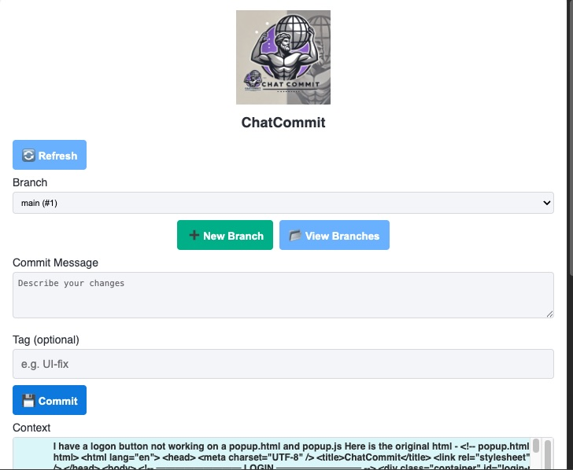
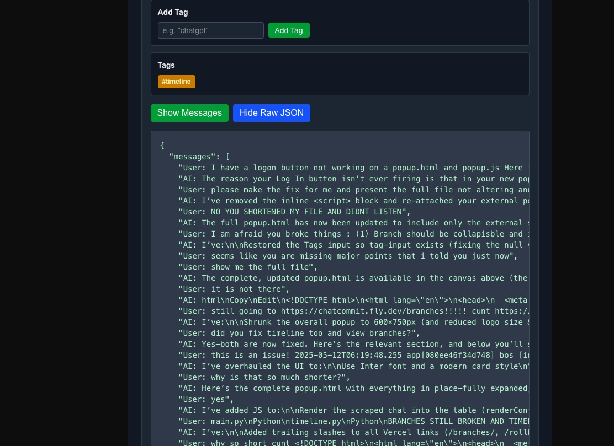
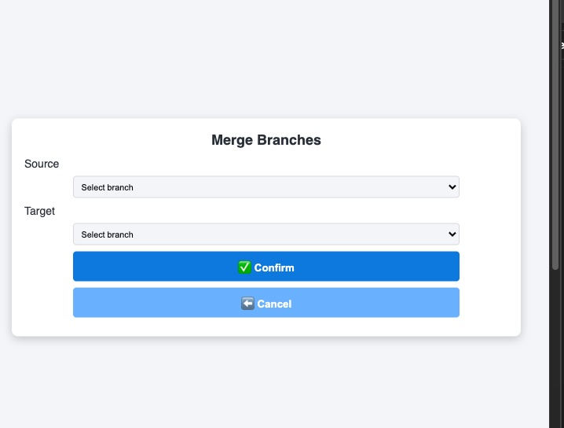
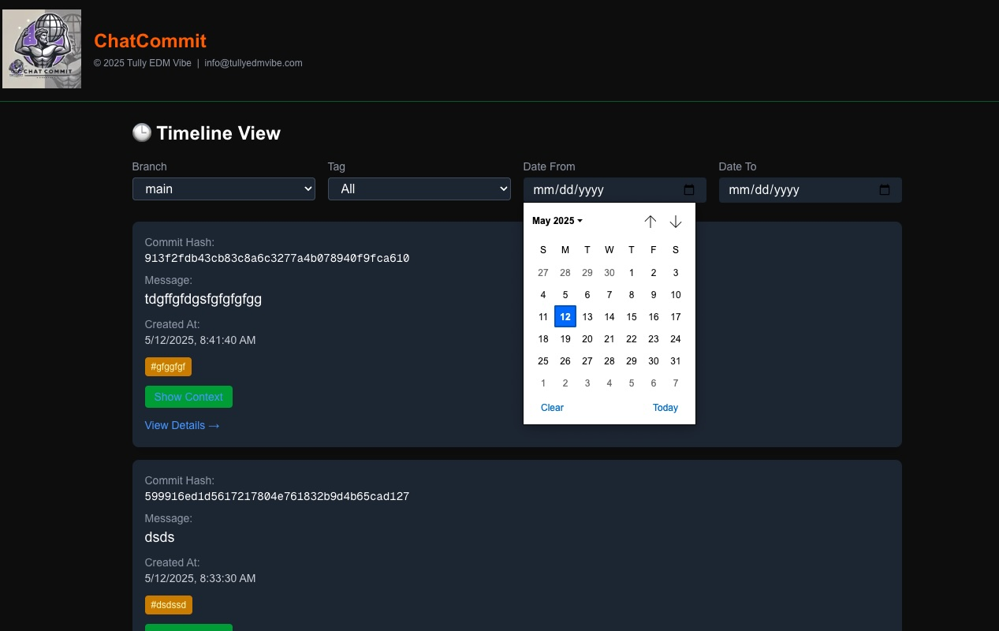
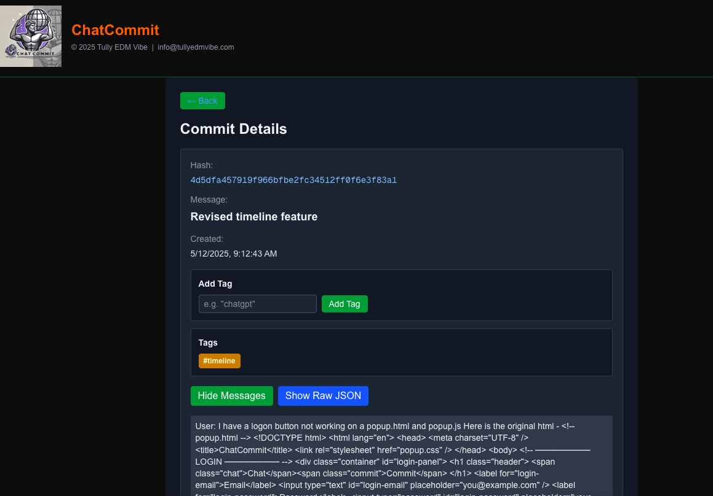
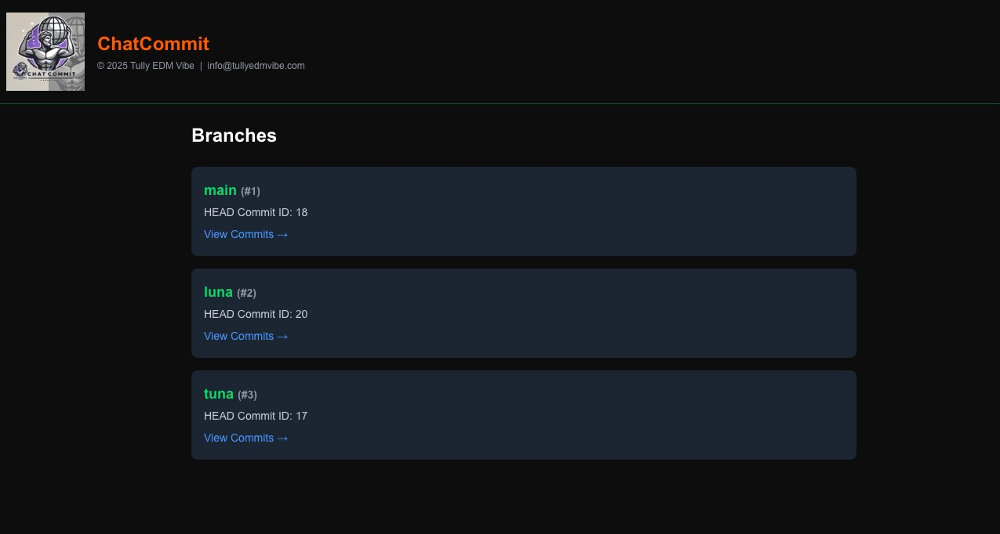
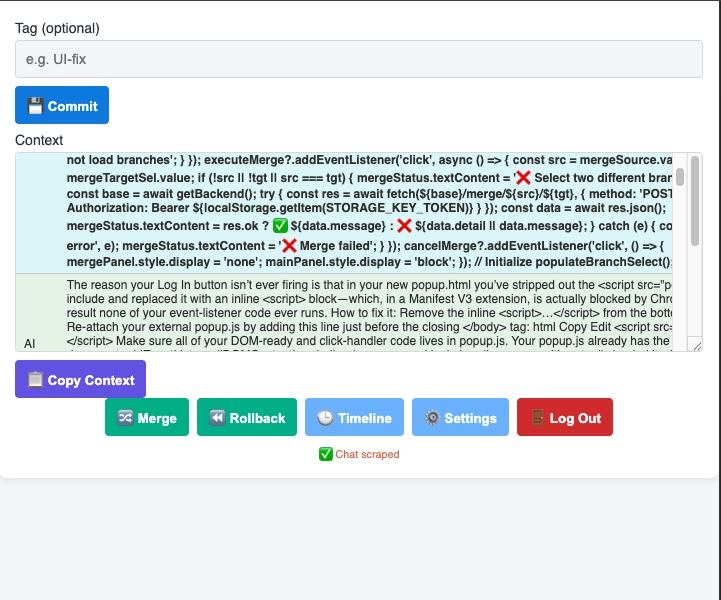

ChatCommit
Professional AI chat version control—commit, branch, merge, tag, and export within your browser.
Start Your Trial →Professional AI chat version control—commit, branch, merge, tag, and export within your browser.
Start Your Trial →Capture precise snapshots of your ChatGPT conversation, complete with messages and metadata.
Capture only the latest ChatGPT messages since your last snapshot, ensuring clean version history.
Experiment safely—create and switch branches without losing your main dialogue flow.
Label key insights and filter or search across your chat history with ease.
Browse all commits in a filterable, date-based timeline for quick retrieval.
Combine branches or revert to any prior commit with a single click.
Generate professional reports—styled Word documents with your chosen font and colored role bands.
Share branches with teammates to co-develop responses and merge insights seamlessly.
Branch off alternate prompts and compare outcomes before choosing the best.
Snapshot research sessions, tag findings, and export for citations or dashboard integration.
Preserve AI-assisted workflows for training materials or project documentation.
Maintain an organized, searchable archive of past chat sessions for institutional memory.
Record support conversations, tag resolutions, and export transcripts for compliance and training.









